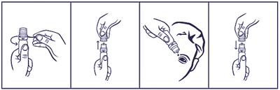

|
 |
| СИГИДА КРИСТАЛЛ (SIGIDA CRYSTAL) naphazoline капли глазные | ||||||
|
Клинико-фармакологическая группа: Препарат с сосудосуживающим действием для местного применения в офтальмологии Номер и дата регистрации: ЛП-004032 от 22.12.16 Код ATX: S01GA01 |
Владелец регистрационного удостоверения: зарегистрировано и произведено Представительство: | |||||
Форма выпуска, состав и упаковка ◊ Капли глазные в виде прозрачной, бесцветной или слегка желтоватой жидкости.
Вспомогательные вещества: борная кислота - 18.7 мг, макрогол 300 - 1.125 мг, натрия гиалуронат - 1 мг, динатрия эдетата дигидрат (трилон Б) - 0.5 мг, 1М раствор натрия гидроксида или 0.1М раствор азотной кислоты - до pH 4.0-7.0, вода д/и - до 1 мл. 10 мл - флаконы полиэтиленовые (1) с капельным дозатором - пачки картонные. | ||||||
| ||||||
Описание препарата основано на официально утвержденной инструкции по применению и утверждено компанией-производителем для издания 2022 г. | ||||||
Фармакологическое действие |
Фармакокинетика |
Показания |
Режим дозирования |
Побочное действие |
Противопоказания |
Беременность и лактация |
Особые указания |
Передозировка |
Лекарственное взаимодействие |
Условия хранения и сроки годности |
Условия реализации
Фармакологическое действие
Нафазолин стимулирует α2-адренорецепторы сосудов, при местном применении оказывает сосудосуживающее действие, что приводит к уменьшению гиперемии и отека конъюнктивы. Полный местный эффект нафазолина проявляется уже через 5 мин с момента применения. Действие продолжается в течение 6-8 ч. Фармакокинетика
Нафазолин может всасываться со слизистых оболочек, вызывая системные эффекты, хотя такое действие у взрослых после введения препарата в конъюнктивальный мешок является маловероятным. Системные реакции наступают, главным образом, у пациентов пожилого возраста и у детей младшего возраста. Показания
Режим дозирования
Препарат применяют местно, в конъюнктивальный мешок. Взрослым и детям старше 6 лет назначают по 1-2 капли 2-3 раза/сут; детям в возрасте от 2 до 6 лет - по 1 капле 1-2 раза/сут. Препарат не следует применять дольше 3-5 дней. Порядок работы с флаконом, укомплектованным капельным дозатором  1. Удалить предохранительное кольцо перед первым использованием флакона. 2. Осторожно снять колпачок с флакона. Не касаясь дозатора, перевернуть флакон дозатором вниз, зафиксировав между большим и указательным пальцами. Перед началом использования рекомендуется прокачать дозатор до появления первой капли препарата путем нескольких нажатий указательным пальцем сверху на флакон. 3. Запрокинуть голову назад, расположить дозатор флакона над глазом и указательным пальцем одной руки оттянуть нижнее веко вниз. Слегка надавить на флакон и закапать необходимое количество раствора в конъюнктивальный мешок глаза. Следует избегать контакта наконечника открытого флакона с поверхностью глаза и руками. 4. После использования надеть колпачок на флакон. После вскрытия флакона препарат можно использовать в течение всего срока годности. По истечении этого срока препарат следует уничтожить. При видимых повреждениях флакона применять препарат не следует. После закапывания препарата следует осторожно закрыть глаз, не моргать и не открывать глаза около 2 мин, чтобы препарат адсорбировался. После закапывания следует осторожно сгибом пальца надавить на внутренний угол закрытого века в течение 1-2 мин. Это может предупредить попадание капель через носослезный канал в полость носа и появление побочных действий системного характера. Затем следует вымыть руки, чтобы удалить остатки препарата. Побочное действие
Со стороны органа зрения: жжение, зуд, боль в области глаз; реактивная гиперемия конъюнктивы, расстройство зрения, сухость слизистой оболочки полости носа, мидриаз, повышение внутриглазного давления. У детей и пациентов пожилого возраста возможны: бледность кожных покровов, тахикардия, боли в области сердца, повышение АД, усиление потоотделения, дрожь, головная боль, возбуждение, тошнота, сонливость, головокружение. Противопоказания
С осторожностью: тяжелые сердечно-сосудистые заболевания (ИБС, артериальная гипертензия), феохромоцитома, гиперплазия предстательной железы, гипертиреоз, сахарный диабет, порфирия, сухой ринит, сухой кератоконъюнктивит, глаукома, совместное применение с ингибиторами МАО или другими средствами, способными повысить АД. Применение при беременности и кормлении грудью
Применение при беременности и в период грудного вскармливания возможно только в том случае, если ожидаемая польза для матери превышает потенциальный риск для плода и ребенка. Отсутствуют данные об экскреции нафазолина в грудное молоко. В случае применения в период грудного вскармливания следует соблюдать осторожность. Особые указания
Препарат предназначен только для местного применения. Применение препарата может вызвать мидриаз. Следует прекратить применение препарата и обратиться к врачу, если улучшения не наблюдается в течение 72 ч или раздражение или гиперемия продолжаются или ухудшаются, или появляются боль в глазу или нарушения зрения. Следует избегать прямого контакта препарата с контактными линзами. Рекомендуется перед применением глазных капель вынимать контактные линзы. Во избежание загрязнения не следует прикасаться верхней частью упаковки к любым поверхностям. В случае изменения цвета или помутнения раствора препарат не пригоден для использования. Пациентам с тяжелыми сердечно-сосудистыми заболеваниями (такими как ИБС, артериальная гипертензия), феохромоцитомой и нарушениями обмена веществ (гипертиреоз, сахарный диабет), а также пациентам, которые получают ингибиторы МАО или другие препараты, способные повысить АД, следует применять препарат только тогда, когда ожидаемая польза превышает потенциальный риск. Очень частое применение препарата может привести к покраснению глаз. Препарат Сигида кристалл целесообразно применять только в случае легкого раздражения глаз. Пациент должен знать:
Не следует применять глазные капли Сигида кристалл пациентам с эпидермально-эндотелиальной дистрофией роговицы. Использование в педиатрии Применение капель у детей в возрасте от 2 до 6 лет следует проводить с осторожностью, только под наблюдением врача. Влияние на способность к управлению транспортными средствами и механизмами Ввиду возможного расстройства зрения следует воздерживаться от управления транспортными средствами и занятий другими потенциально опасными видами деятельности сразу после применения препарата. Передозировка
При местном применении препарата передозировка маловероятна. Отсутствуют данные о случаях передозировки нафазолина в лекарственной форме глазные капли. Симптомы: передозировка или случайное употребление внутрь может привести к угнетению ЦНС, гипотермии, нарушению сердечного ритма, потливости, длительному мидриазу, сонливости и коме (риск передозировки выше у детей и пожилых пациентов), повышению АД с возможным последующим резким снижением АД, тахикардии. Лечение: проведение симптоматической терапии. Лекарственное взаимодействие
Применение нафазолина одновременно с приемом трициклических антидепрессантов может потенцировать сосудосуживающее действие нафазолина. Одновременное применение нафазолина с ингибиторами МАО и в течение 14 дней после их отмены может привести к развитию гипертонического криза. В случае сопутствующей терапии с применением других местных офтальмологических препаратов следует придерживаться 15-минутного интервала между их применением. |
||||||
Вернуться наверх |
||||||
Copyright © Справочник Видаль «Лекарственные препараты в России», Москва, Россия